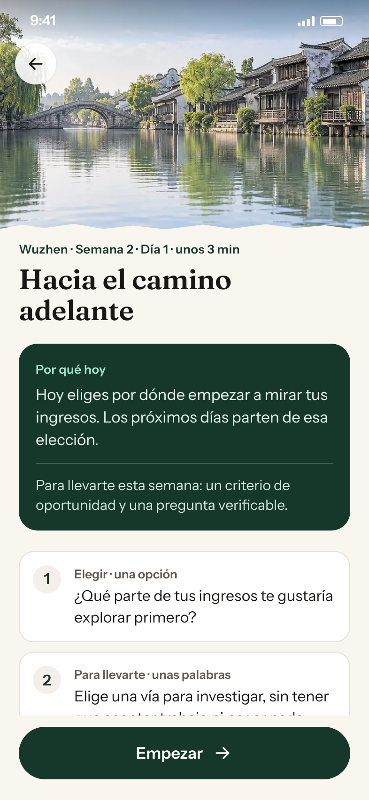
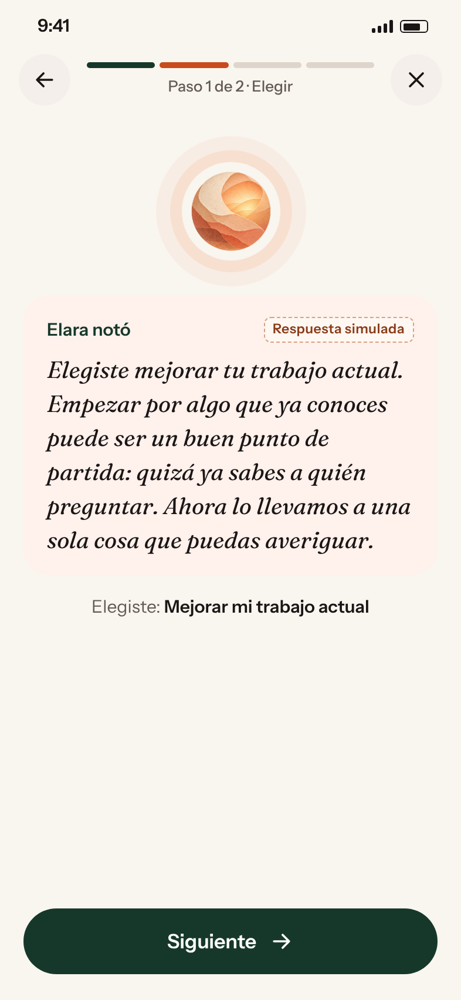
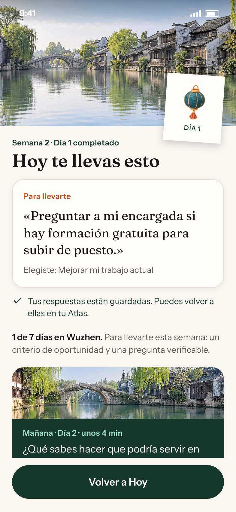
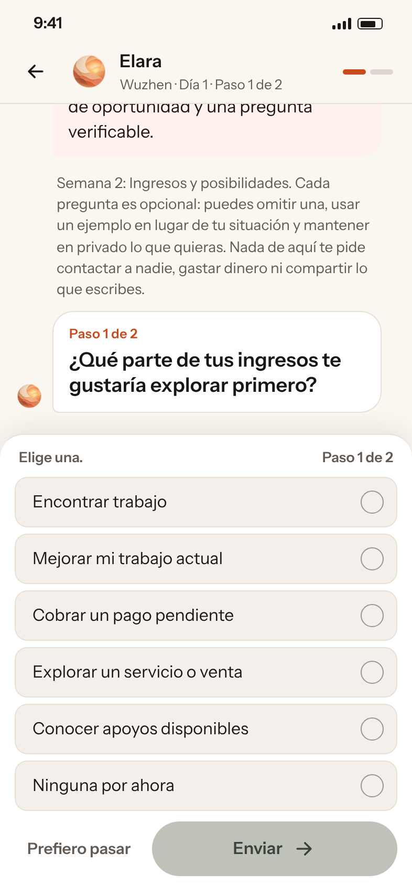
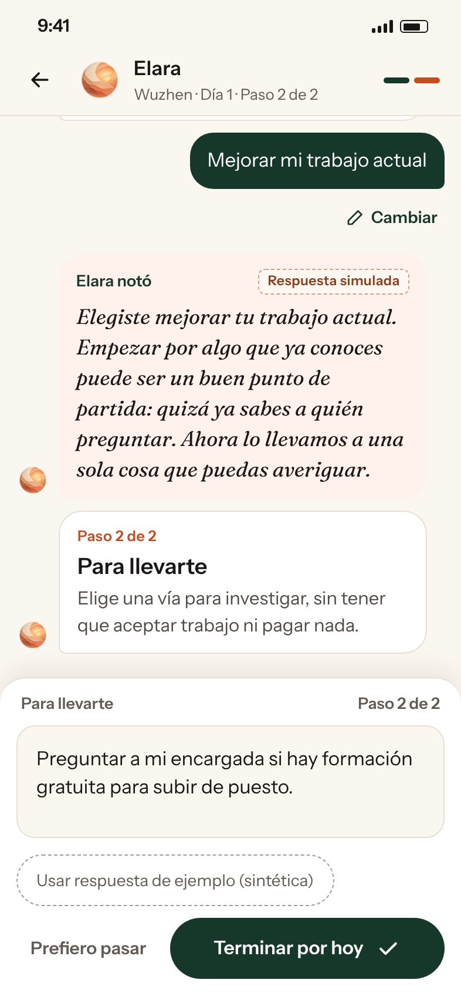
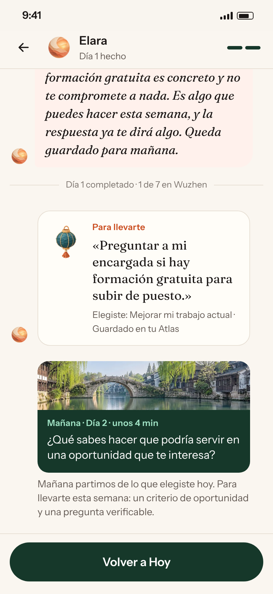
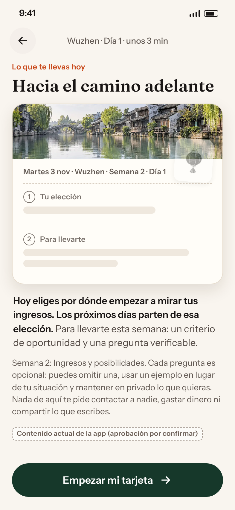
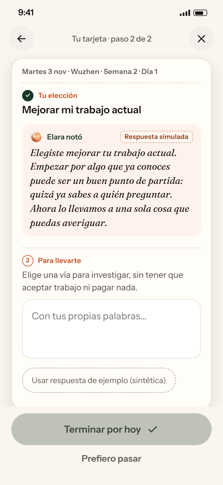
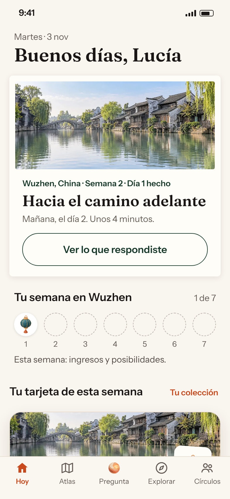

Una sesión diaria de Elara, tres maneras
Dinero · Semana 2 en Wuzhen · Día 1, «Hacia el camino adelante». Las mismas preguntas, el mismo objetivo, las mismas respuestas de ejemplo y la misma respuesta simulada de Elara en las tres. Cambian la estructura, el ritmo y la presentación.
Contenido actual de la app (aprobación por confirmar)Respuestas de Elara simuladasPrototipo, no producción


Camino guiado, paso a paso
Una pantalla por momento: por qué hoy, elegir, lo que notó Elara, «Para llevarte», cierre con mañana. Barra de progreso de cuatro tramos. Lo más cercano a la app actual.
Abrir prototipo A →


Conversación con Elara
Un hilo con Elara. La elección y «Para llevarte» aparecen abajo como entradas estructuradas (no chat libre); su respuesta queda en el hilo y se puede cambiar.
Abrir prototipo B →


Primero la tarjeta que te llevas
Empieza enseñando lo que se lleva hoy. Cada paso llena una tarjeta, que se queda en Hoy toda la semana y en Tu colección.
Abrir prototipo C →Revisión del 3 nov: C v2
C con la guía paso a paso de A: «Por qué hoy», pasos con nombre, «Para llevarte» primero, «Cambiar» sin perder el borrador, salidas claras para «Ninguna por ahora» y «Prefiero pasar», y texto más grande y legible (con prueba al 130 % y al 160 %). C v2 ya no comparte exactamente los textos ni las respuestas simuladas de A, B y C, así que conviene compararla con C (v1) y no en una prueba a tres. Los textos nuevos son una propuesta, pendiente de María y Alejandra.


Tres direcciones visuales (3 nov)
Sobre C v2: la misma sesión, con tres caracteres distintos. Comparar las cuatro lado a lado → · D1 Tarjeta de colección · D2 Paseo por el canal · D3 Con Elara. Análisis en DIRECTIONS.md.
En cada prototipo, el panel «Ver estado» enseña: cargando («Elara está pensando…»), sin conexión con reintento, reanudar tras salir a mitad y sesión terminada. En el móvil, el panel está debajo del teléfono. Capturas en shots/; notas, decisiones y preguntas para María en NOTES.md. Ningún dato real ni llamada a IA: todo es sintético.